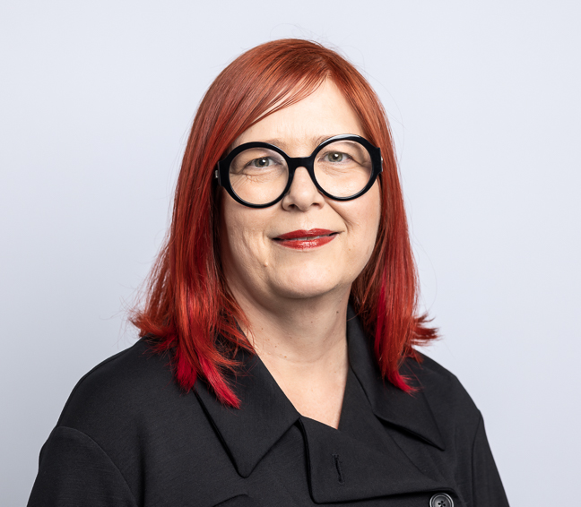
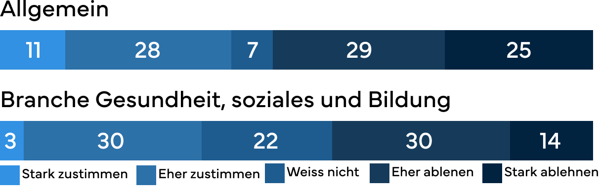
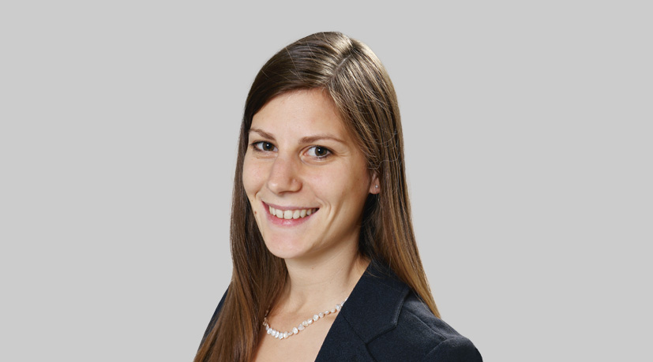
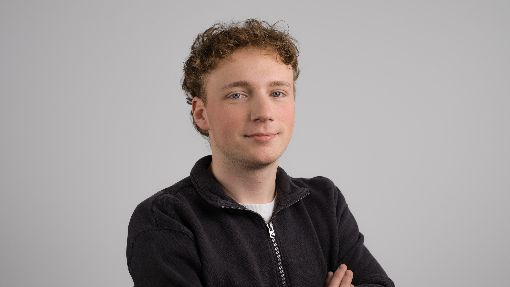

Die 4-Tage-Woche
Wenn Arbeit neu gedacht wird
Immer mehr Betriebe testen die 4-Tage-Woche um Fachkräfte zu gewinnen. In gewissen Branchen funktioniert das bereits erstaunlich gut, in anderen ist die Zurückhaltung noch zu gross. Doch jene die den Schritt wagen, stellen meist fest: Der Mut zahlt sich oft aus.
Fiktives Beispiel
Mit ihrem ersten Kaffee in der Hand setzt sich Livia an den
Küchentisch in ihrer neuen Wohnung in Chur. Ungewohnt, denkt sie,
als sie den Laptop aufklappt und ihren Blick durch ihr neues zuhause
schweifen lässt. Seit einer Woche wohnt sie nun zusammen mit ihrem
Freund hier. Für ihn war dies keine grosse Veränderung, da er selbst
aus Chur kommt und bereits hier arbeitet. Für die 24-jährige St.
Gallerin ist es jedoch eine grosse Umstellung. Neue Wohnung, neue
Stadt und bald auch hoffentlich ein neuer Job.
Als Fachfrau Gesundheit mit fünf Jahren Berufserfahrung weiss sie,
dass sie auf dem Fachkräftemarkt gesucht wird. Trotzdem will sie
eine Stelle finden, die wirklich zu ihr passt. Am liebsten würde sie
80% arbeiten, damit sie einen zusätzlichen Tag frei hat. Zeit mit
ihrem Freund, mit anderen Freunden oder einfach nur mit sich selbst
zu verbringen, ist für Livia sehr wichtig. Der kleine Luxus
«Altstadtwohnung» hat jedoch seinen Preis und ein reduziertes Pensum
wäre finanziell schwierig.
Während sie durch die Stellenbörsen scrollt, bleibt sie an einem
Satz hängen: «Arbeitszeitmodell 4-Tage-Woche bei gleichbleibendem
Gehalt.» Livia liest den Satz zweimal. Dann klickt sie auf die
Beschreibung und ein paar Stunden später schickt sie ihre
Bewerbungsunterlagen ab.
Warum die Frauenklinik auf flexible Modelle setzt
Livia ist mit ihrem Wunsch nach mehr Flexibilität nicht allein. Immer mehr Personen sind auf der Suche nach einem Weg, wie sie ihre Arbeitszeit flexibler gestalten können. Die Frauenklinik Fontana hat dies erkannt und so landet die Bewerbung von Livia im Postfach der Pflegeleiterin Sylke Schwarzenbach.
«Durch das neue Arbeitszeitmodell konnten wir bereits mehrere Fachkräfte gewinnen. Gerade jüngere Mitarbeitende schätzen es, nicht mehr zwischen einer 80-Prozent-Anstellung mit vier Arbeitstagen und einem vollen 100-Prozent-Pensum wählen zu müssen.»
Sylke Schwarzenbach, Pflegeleitung Frauenklinik Fontana
Das Ziel der Frauenklinik Fontana ist es, eine attraktive Arbeitgeberin zu sein. Gerade in Zeiten des Fachkräftemangels sei dies von grosser Bedeutung, um neues Personal zu gewinnen und das Bestehende halten zu können.
Die Herausforderungen in der Pflege
Die Einführung eines solchen Modells in der Pflege sei schwieriger als in anderen Bereichen, da es eine gewisse Schichtabdeckung braucht und es sich schliesslich um einen 24-Stunden-Betrieb handle. Es gehe daher nicht darum, ob ein Papier jetzt oder später bearbeitet werde, die Arbeit falle kontinuierlich an. Deshalb mussten einige Prozessanpassungen gemacht werden. Schritt für Schritt sei Sylke Schwarzenbach mit ihrem Team die verschiedenen Prozesse, Dienstzeiten und Abläufe durchgegangen und haben geschaut, ob man diese anders oder gar ganz neu organisieren könne.
«Es funktioniert nur, wenn man so etwas gemeinsam mit dem Team entwickelt.»
Sylke Schwarzenbach, Pflegeleitung Frauenklinik Fontana
Die Umsetzung
Ein Dienst in der 4-Tage-Woche dauert 10,5 Stunden, während dieser normal nur 8,25 Stunden dauern würde. Neben dem 4-Tage-Modell hat man auch ein gemischtes Modell eingeführt. Dieses besteht aus einer Mischung von normalen und langen Diensten. Die Mitarbeitenden können dann auswählen, in welchem Modell sie lieber arbeiten würden. Es sei wichtig, dass man den Mitarbeitenden nichts überstülpe, sondern sie ein Modell wählen können, das am besten zu ihnen passe.

Wirkung und Erfolg
Seit etwas mehr als einem Jahr arbeitet die Frauenklinik mit den beiden neuen Modellen. Mehr als die Hälfte der Mitarbeitenden hat sich auch für ein solches entschieden. Das Wichtigste für Sylke Schwarzenbach sei jedoch, dass sich die Mitarbeitenden wohl fühlen.

Sylke Schwarzenbach
Wie das Team auf das neue Modell reagierte
Transkript
Einmal im Jahr mache ich eine Umfrage bei den Mitarbeitenden.
Ich möchte wissen, wie es ihnen psychisch geht, ob sie eine
Mehrbelastung spüren, ob sich etwas in den Teams verändert hat
oder ob sich jemand benachteiligt fühlt.
Als ich diese Fragen das erste Mal gestellt habe, kam
sofort die Reaktion: „Aber Sylke, wir schaffen das nicht mehr
ab, gell? Das kannst du jetzt nicht machen.“ Da musste ich
lachen und dachte: Das ist wohl das schönste Feedback, das man
in diesem Moment bekommen kann.
Würde ihr Unternehmen eine Verkürzung auf vier Tage begrüssen?
Die folgende Grafik zeigt, wie unterschiedlich die Einschätzungen zur 4‑Tage‑Woche je nach Branche ausfallen. Grundlage dafür sind Daten von Sotomo und der AXA aus dem Jahr 2022.

Die Grafik oben zeigt, wie unterschiedlich die Einschätzungen je
nach Branche ausfallen. Besonders auffällig ist dabei der hohe
Anteil an unsicheren Antworten im Gesundheits‑, Sozial‑ und
Bildungsbereich. In keiner anderen Branche sind die “weiss nicht”
Antworten so hoch wie im Bereich Gesundheit, Soziales und Bildung.
Das System gilt als komplex und viele fühlen sich in dieser
Komplexität verloren. Eine Umfrage von Medinside aus dem Jahre 2024
zeigt, dass sich damals keines der 20 grössten Spitäler vorstellen
konnte, die 4-Tage-Woche einzuführen.
Zentral bleibe,
dass man das Modell selbst ausarbeite. Ein Konzept, das in jedem
Spital funktioniert, gibt es gemäss Sylke Schwarzenbach nicht. Jeder
Betrieb funktioniere anders und müsse deshalb auch ganz anders
gehandhabt werden. Dies sieht man nicht nur in der Frauenklinik
Fontana, auch die Forschung im Bereich New-Work kommt zu diesem
Schluss.
Der Blick der Wissenschaft
Auch Kathrin Dinner blickt bei der 4-Tage-Woche über die reine Anzahl Arbeitstage hinaus. Gemeinsam mit einer Kollegin begleitete sie ein Pilotprojekt mit dem Verein KITAWAS. Ziel war es herauszufinden, wie flexiblere Arbeitsmodelle in einem Berufsfeld funktionieren können, in dem Betreuung, Präsenz und feste Abläufe zum Alltag gehören. Für Kathrin Dinner steht dabei nicht die Frage im Zentrum, ob jemand vier oder fünf Tage arbeitet. Viel entscheidender sei, wie Menschen heute Arbeit wahrnehmen. Erwartungen an den Beruf hätten sich in den letzten Jahren verändert. Themen wie Vereinbarkeit von Beruf und Privatleben, Sinnhaftigkeit, Mitgestaltung und Selbstbestimmung seien wichtiger geworden.

Kathrin Dinner
Die Diskussion greift zu kurz
Transkript
Die Diskussion wird oft stark auf die Arbeitszeitverkürzung fokussiert oder der Blick wird auf den zusätzlichen freien Tag reduziert. Und ich finde, das greift zu kurz. Meiner Meinung nach geht es um viel mehr als nur um die Anzahl Arbeitstage.
Die Herausforderungen in der Pflege
Die 4-Tage-Woche sei deshalb weniger eine universelle Lösung, sondern Ausdruck eines grösseren Wandels. Einer Entwicklung, bei der Menschen Arbeit stärker an ihr Leben anpassen möchten und nicht mehr ausschliesslich umgekehrt.
«In diesem Sinn ist die 4-Tage-Woche nicht einfach die Lösung an sich, sondern eher ein sichtbares Symptom eines grösseren Wandels.»
Kathrin Dinner, wissenschaftliche Projektleiterin FH Graubünden
Im Pilotprojekt mit KITAWAS wurde die Wochenarbeitszeit nicht reduziert. Stattdessen wurde sie anders organisiert. Die Mitarbeitenden arbeiteten an vier längeren Betreuungstagen. Hinzu kamen rund fünf Stunden für administrative oder pädagogische Aufgaben, die zeitlich flexibler erledigt werden konnten. Dazu gehörten etwa Elternkommunikation, Dokumentationen oder organisatorische Tätigkeiten. Damit zeigt sich ein ähnliches Bild wie in der Frauenklinik Fontana. Auch dort war nicht einfach der zusätzliche freie Tag entscheidend. Der eigentliche Kern lag darin, Arbeitsprozesse neu zu denken. Wer übernimmt welche Aufgaben? Welche Arbeiten brauchen Präsenz? Wo entstehen Freiräume und wo neue Belastungen?
«Es geht nicht nur darum, Stunden anders zu verteilen, sondern darum, wie Arbeit organisiert wird, wie Entscheidungen getroffen werden, wie Verantwortung übernommen wird und wie Teams zusammenarbeiten.»
Kathrin Dinner, wissenschaftliche Projektleiterin FH Graubünden
Gleichzeitig zeigt die Forschung auch die Grenzen solcher Modelle. Nicht jede Funktion eignet sich gleich gut für eine 4-Tage-Woche. Gerade in Berufen mit fixer Betreuung oder Schichtbetrieb sei die Umsetzung anspruchsvoll. Auch im Gesundheitswesen zeigt sich dieses Spannungsfeld. Viele Schweizer Spitäler prüfen zwar flexiblere Modelle, eine klassische 4-Tage-Woche bleibt jedoch schwierig umsetzbar.
Livia ist froh über die 4-Tage-Woche
Für Livia ist all das keine theoretische Debatte. Wenige Wochen nach
dem Abschicken ihrer Bewerbung beginnt sie ihre neue Stelle in Chur.
Neue Abläufe, neue Kolleginnen und ein neuer Alltag warten auf sie.
Doch schon früh merkt sie, dass für sie nicht nur das Pensum
entscheidend ist, sondern die Möglichkeit mitzureden.
Sie weiss, dass sich Prioritäten im Leben verändern
können. Heute sind es Zeit mit ihrem Freund, Freunde zu treffen oder
sich in der neuen Stadt einleben. In ein paar Jahren könnten es
andere Themen sein. Familie, Weiterbildung oder neue persönliche
Ziele. Dass sie in ihrem Arbeitsmodell mitreden und Anpassungen
ansprechen kann, gibt ihr Sicherheit.
Es ist nicht
allein der freie Tag, der für sie zählt. Es ist das Gefühl, Einfluss
auf die eigene Situation zu haben. Genau diese Selbstbestimmung war
es, nach der sie gesucht hat. Und genau sie hat sie in ihrer neuen
Stelle gefunden.
Einordnung

Andrin Gerber
Einordnung der Redaktion
Transkript
Damit bestätigt sich, was sowohl Sylke Schwarzenbach als auch Kathrin Dinner sagen: Es gibt kein Modell, das man einfach übernehmen kann. Jede Organisation funktioniert anders und muss ihre eigene Lösung finden. Für Arbeitgeber kann das aber auch eine Chance sein. Gerade in Branchen mit Fachkräftemangel helfen flexible Arbeitszeitmodelle, neue Mitarbeitende zu gewinnen und bestehende zu halten. Und für die Mitarbeitenden bedeutet es im besten Fall mehr Vereinbarkeit, mehr Einfluss auf den Alltag und mehr Zufriedenheit.